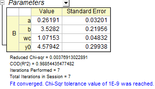

Seit Origin 2018b können Sie eine implizite Funktion mit Hilfe von Integralen definieren.
Unter bestimmten Umständen möchten Sie vielleicht eine Fitfuntkion mit mehreren Integralen erstellen:
Bitte lesen Sie unter Anpassen mit Integral mit Hilfe der LabTalk-Funktion eine genauere Beschreibung der Parameter in dem Ausdruck nach.
In Version Origin 8.6 unterstützt die Funktion Fitfunktionen erstellen jedoch nur ein Integral in der Fitfunktion. Durch Umgehen des komplexen Origin C-Codes können Sie die Funktion Fitfunktionen verwalten verwenden, um das Ziel zu erreichen.
In diesem Tutorial sehen Sie, wie Sie mit der Funktion Fitfunktionen verwalten eine Fitfunktion erstellen, die aus zwei Integralen besteht. Natürlich ist es möglich, je nach Bedarf mehr Integrale einzubinden.
Origin-Version mind. erforderlich: Origin 8.6
Seit Origin 2018b können Sie eine implizite Funktion mit Hilfe von Integralen definieren. |
Dieses Tutorial zeigt Ihnen, wie Sie:
Das Anpassungsmodell wird wie folgt geschrieben
In der Anpassungsfunktion gibt es vier Parameter. Um eine Integration durchzuführen, müssen drei von ihnen an den Integrand weitergegeben und die unabhängige Variable als obere Grenze verwendet werden.
y=integral(polyint, -5, x, a)-integral(gaussint, -inf, x, b, wc)+y0
Wie unter Anpassen mit Integral mit Hilfe der LabTalk-Funktion beschrieben, sind x, a, b und wc Parameter, die an die Integrandfunktionen weitergegeben werden.
function double polyint(double t, double ia) { return ia*t; } function double gaussint(t, ib, iwc) { return ib *t* exp(-(t)^2/iwc^2); }
Kopieren Sie die folgenden Daten und fügen Sie sie in ein Origin-Arbeitsblatt ein:
| X | Y |
|---|---|
| -3 | 2.47613 |
| -2.6 | 2.24016 |
| -2.2 | 2.01543 |
| -1.8 | 1.83094 |
| -1.5 | 1.85038 |
| -1.1 | 2.17725 |
| -0.9 | 2.44967 |
| -0.7 | 2.61423 |
| -0.5 | 3.02305 |
| -0.3 | 3.23057 |
| -0.1 | 3.37822 |
| 0. 1 | 3.2827 |
| 0.3 | 3.18775 |
| 0.5 | 2.86194 |
| 0.7 | 2.69104 |
| 0.9 | 2.39315 |
| 1.4 | 2.04046 |
| 1.8 | 1.85287 |
| 2.2 | 1.85325 |
| 2.6 | 2.20569 |
Markieren Sie Y-Spalte und drücken Sie Strg + Y, um den Dialog NLFit aufzurufen. Wählen Sie die Funktion, die Sie gerade definiert haben, und klicken Sie auf die Schaltfläche Fit  , um die Anpassung durchzuführen.
, um die Anpassung durchzuführen.
